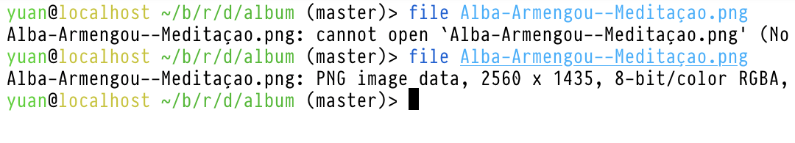

Schrödinger’s Image: a File That Both Exists and Not
Table of Contents
Here is an Image that should appear broken to you:

But if you right click the image and copy its address, and open that URL in a new tab (don’t just “open in new tab”, copy the address), it magically appears. I have had this problem on my music blog for some time: When I preview the web pages on my machine, everything looks fine, but once I pushed it onto GitHub Pages, some images didn’t appear. Yet I could still see them if I copy the address out and load it in a new tab.
Who killed Mr. M?
My initial guess was that GitHub Pages had some bug with Unicode addresses. Because all the problematic images has Unicode filenames and since I could see the files in a new tab, they obviously exist. Plus I can view them fine on my machine.
Turns out that GitHub was not the problem: after switching to self-hosting my blog, the images were still missing. It wasn’t due to not encoding Unicode characters in the URL either, encoding the address didn’t solve it.
Ok, I have access to the server now, maybe I can figure out what’s going on. My server is in Common Lisp, so I can just attach to the REPL and type:
* (probe-file #p"~/blog/rock/day/album/Alba-Armengou--Meditaçao.png") NIL
So the server couldn’t find the file, that’s why it replied with 404. But I know the file exists, right?
$ cd ~/blog/rock/day/album
$ file Alba-Armengou--Meditaçao.png
Alba-Armengou--Meditaçao.png: cannot open `Alba-Armengou--Meditaçao.png' (No such file or directory)
Oops, file couldn’t find it either, but if I list all the files:
$ ls Alba-Armengou--I-feel-pretty.png Alba-Armengou--Meditaçao.png alba-armengou--shiny-stockings.png beatles--abbey-road.jpg beatles--the-beatles.jpg bob-dylan--the-freewheelin-bob-dylan.png buffalo-springfield--for-what-its-worth.png ...
I can see it right at the second line. What the hell? Maybe there is a type? I copied the filename out and tried the command again:
$ file Alba-Armengou--Meditaçao.png Alba-Armengou--Meditaçao.png: PNG image data, 2560 x 1435, 8-bit/color RGBA, non-interlaced
This time file found the image. But the two filenames are identical:

Clearly, those two strings has something in different. I echo’ed them into two files and inspected them with Emacs:
echo Alba-Armengou--Meditaçao.png > ~/bad echo Alba-Armengou--Meditaçao.png > ~/good Emacs
Turns out the “ç” in the bad one is composed by two “characters”:
c + ◌̧ = ç
And the good one has a single character “ç”. The two “ç” looks identical but have different byte representations.
ç ≠ ç
What really happened
Here is my guess: When naming the image file, the filesystem automatically normalized the composed character (combining character) to a single character (precomposed character), so the URL containing the combining character doesn’t match the filename and the server cannot find it. And when we copy out the address and paste it back into the browser address bar, the browser automatically normalized the address, the URL matched the filename and the image appeared. Proving the hypothesis is left as an exercise for the reader.
The image loads normally on my machine because it runs macOS. A post on THE ECLECTIC LIGHT COMPANY says APFS normalizes filenames on macOS since High Sierra. So it can find my image file with the incorrect filename. I didn’t find anything about normalization for ext4 so I assume it doesn’t normalize.
According to that blog, there is a Unicode standard on normalization: Unicode® Standard Annex #15.
In Emacs, there is a built-in package ucs-normalize.el that normalizes text according to Unicode standard. I added it to my blog generator. Now I can happily add images with Unicode text again.